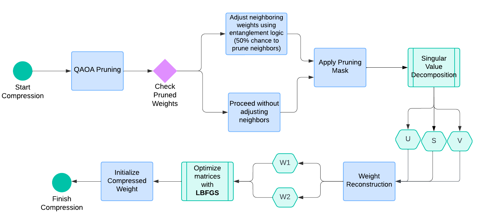

Convolutional neural networks (CNNs) have made significant advances in computer vision tasks, yet their high inference times and latency often limit real-world applicability. While model compression techniques have gained popularity as solutions, they often overlook the critical balance between low latency and uncompromised accuracy. By harnessing quantum-inspired pruning, tensor decomposition and annealing-based matrix factorization – three quantum-inspired concepts – we introduce QIANets: a novel approach of redesigning the traditional GoogLeNet, DenseNet, and ResNet-18 model architectures to process more parameters and computations whilst maintaining low inference times. Despite experimental limitations, the method was tested and evaluated, demonstrating reductions in inference times, along with effective accuracy preservations.
The field of computer vision (CV) has recently experienced a substantial rise in interest (Su & Crandall, 2021). This surge has created transformative advancements, driving the development of deep learning models, particularly those based on the convolutional architecture, such as DenseNet (Huang et al., 2017). GoogLeNet (Szegedy et al. 2015), and ResNet-18 (He et al., 2015). These methods have significantly optimized neural networks for image processing tasks, achieving state-of-the-art performance across multiple benchmarks (Anumol et al., 2023). However, the increasing computational complexity, memory consumption, and model size – often comprising millions to billions of parameters – pose substantial challenges for deployment, especially in time-sensitive and computationally-limited scenarios. The demand for low-latency processing in real-time applications, such as image processing and automated CV systems, is critical; compact models are needed for faster responses (Honegger et al., 2014).
To address these issues, researchers have explored various optimization techniques to reduce inference times and latency while maintaining high accuracy. Model compression techniques such as pruning, quantization, and knowledge distillation have shown promise in enhancing model efficiency (Li et al., 2023). Yet, these methods often come with trade-offs that can impact model performance, necessitating a careful balance between energy efficiency and accuracy.
In recent years, the principles of quantum computing have emerged as an avenue for accelerating inference in machine learning (Divya & Dinesh Peter, 2021). Quantum-inspired methods, which leverage phenomena such as quantum optimization algorithms, strive to maintain model performance by reducing computational requirements, thereby offering significant speedups for certain tasks (Pandey et al., 2023). Meanwhile, traditional model compression techniques reduce the size of neural networks by removing less important weights, acrificing accuracy for lower latency (Francy & Singh, 2024). By integrating concepts from quantum mechanics into convolutional neural network (CNN) models, our approach seeks to address these limitations. We explore the potential of designing CNNs to balance improved inference times with minimal accuracy loss, creating a novel solution.
Within this context, we employ three key quantum-inspired principles: 1. quantum-inspired pruning: reducing model size by removing unnecessary parameters, guided by quantum approximation algorithms; 2. tensor decomposition: breaking down high-dimensional tensors into smaller components to reduce computational complexity; and 3. annealing-based matrix factorization: optimizing matrix factorization by using annealing techniques to find efficient representations of the data.
Our work addresses the following research question: How can principles from quantum computing be used to design and optimize CNNs to reduce latency and improve inference times, while still maintaining stable accuracies across various models?
In this paper, we propose a Quantum-Integrated Adaptive Networks (QIANets) – a comprehensive framework that integrates these quantum computing techniques into the DenseNet, GoogLeNet, and ResNet-18 architectures. To the best of our knowledge, this is the first attempt made to: 1) apply quantum computing-inspired algorithms into the models’ architectures to reduce computational requirements and achieve efficient performance improvements, and 2) specifically target these models.
The contributions of this work include:
• QIANets: a comprehensive framework that integrates QAOA-inspired pruning, tensor decomposition and quantum annealing-inspired matrix factorization into three CNNs.
• An exploration of the trade-offs between latency, inference time, and accuracy, highlighting the effects of applying quantum principles to CNN models for real-time optimization.
Our proposed method builds upon the ideas of model compression & quantum-inspired techniques to improve the inference times of CNNs.
Pruning is one of the most effective ways to accelerate CNNs. Cheng et al. (2018) provided a comprehensive review of model compression techniques for deep neural networks (DNNs), specifically focusing on parameter pruning methods: the removal of individual weights based on importance. This significantly reduces model size, while generally preserving the model’s performance.
Despite the advancements in parameter pruning, overall conventional pruning techniques have limitations: 1) when applied during the training phase, as such a method may be costly, and 2) the risk of prematurely removing important data. Hou et al. (2022) proposed a novel methodology called CHEX for training-based channel pruning and regrowing of channels throughout the training process. By employing a column subset selection (CSS) formulation, CHEX allocates and reassigns channels across layers, allowing for significant model compression without requiring a fully pre-trained model.
Quantum computing is currently recognized as a potential game-changer for various fields, including NLP, due to its ability to process complex data more efficiently than classical computers. Shi et al. (2021) proposed a quantum-inspired architecture for convolutional neural networks (QICNNs), using complex-valued weights to enhance the representational capacity of traditional CNNs. The authors display that their QICNNs achieve higher classification accuracy and faster convergence on datasets compared to standard CNNs. In contrast, our methodology prioritizes structural optimization for greater computational efficiency. We focus on reducing latency and improving inference times by employing various quantum techniques to decrease computational overhead in the tested CNNs.
Hu et al. (2022) set a high standard in the field by addressing the unique challenges of compressing quantum neural networks (QNNs). Their CompVQC framework leverages an alternating direction method of multipliers (ADMM) approach, achieving a remarkable reduction in circuit depth by over 2.5 times with less than 1% accuracy degradation. While their results in QNN compression are impressive, our research introduces a novel first-attempt technique that applies QAOA-inspired pruning, tensor decomposition and quantum annealing-inspired matrix factorization to classical CNNs. Our work can complement their approach, underscoring the potential of integrating quantum concepts to classical networks, and may lead to further improvements in model efficiency.
Pruning is a widely applied technique for reducing CNN complexities; early studies have demon- strated the effectiveness of pruning in optimizing neural networks (LeCun et al., 1989; Hanson and Pratt, 1989; Hassibi et al., 1993). Our method implements a new approach to optimization through the Quantum Approximate Optimization Algorithm (QAOA). QAOA (Fahri et al., 2022) is designed to address problems in combinatorial optimization, which involves finding the best solution from a finite set of solutions.
Similarly, we adapt these principles by framing pruning as a probabilistic optimization problem. The goal is to identify the most important weights to retain while allowing others to approach zero. For a neural network layer represented by weights as a tensor: W ∈ RCout×Cin×H×W, we define the importance of each weight using its absolute value: Ii,j = |Wi,j|
To facilitate decision-making regarding weight retention, we normalize these importance scores with the softmax function to derive probabilities:
Pi,j = ∑k,l eIk,l eIi,j
These probabilities are then utilized in a quantum-inspired decision-making process, where weights are selected for pruning based on a threshold λ, influenced by a hyperparameter known as layer sparsity α:
Ri,j =
1
if Pi,j ≥ λ
0
otherwise
Here, Ri, j serves as a binary retain mask indicating whether a weight is pruned (set to 0) or retained. The threshold λ is calibrated to ensure that approximately 100α% of the weights are pruned.
When implemented, we adopt an iterative approach for pruning the model across multiple stages. Each iteration recalculates the retain mask based on updated probabilities derived from the current weights. To enhance this process, we introduce a neighboring entanglement mechanism: when a weight is pruned, its adjacent weights in the tensor may also be pruned with a specified probability Pentangle. This mechanism simulates quantum entanglement, reflecting the idea that nearby weights may exhibit correlated behavior and can be pruned collectively. For convolutional layers specifically, this sequential pruning strategy is executed over several iterations, progressively reducing the number of parameters in the model while maintaining performance integrity.
Tensor decomposition further reduces the dimensionality of the weight tensor while preserving essential information for accurate predictions. This technique is inspired by Quantum Circuit Learning (QCL), where high-dimensional tensors are decomposed into lower-dimensional forms for efficient training of quantum circuits (Mitarai et al., 2018).
For a weight tensor W ∈ RCout×Cin×H×W, we use Singular Value Decomposition (SVD) (Wang et al., 2021) on its flattened matrix representation Wf ∈ RCout×(Cin·H·W), decomposing it as:
Wf = UΣVT
Figure 1: An illustrative diagram showcasing the framework used for Quantum-Inspired Pruning, Tensor Decomposition, and Quantum Annealing-Inspired Matrix Factorization.
Here, U ∈ RCoutxr and V ∈ R(Cin·H·W)xr are orthogonal matrices, and Σ ∈ Rr×r is a diagonal matrix of singular values. The rank r, chosen as a hyperparameter, controls the compression level by retaining only the top r singular values, leading to a reduced rank approximation:
Wf ≈ Ur Σr VrT.
This reduces the number of parameters and computational costs during inference.
After tensor decomposition, the original weight tensor is reconstructed using the truncated matrices, reshaping the compressed weights back into their original form. This process significantly decreases the number of parameters without greatly affecting model performance. We apply this method to each convolutional layer, creating lower-rank approximations to control the model’s capacity.
Quantum annealing solves optimization problems by evolving a system toward its lowest energy state (Gherardi & Leporati, 2024). We apply this concept to factorize weight tensors, treating the factorization as an optimization problem aimed at minimizing the difference between the original weights and their factorized representation.
Given a weight matrix W ∈ Rm×n, we seek to factor it into two lower-dimensional matrices, W1 ∈ Rm×r and W2 ∈ Rr×n, where r is a hyperparameter that controls the rank:
W ≈ W1W2
The objective is to minimize the reconstruction error:
L(W1, W2) = ∥W − W1W2∥2F
Here, ∥ · ∥F denotes the Frobenius norm, measuring the difference between the original and factorized matrices. We use an iterative optimization procedure inspired by quantum annealing to minimize the loss.
The factorization employs gradient-based optimization, initializing W1 and W2 randomly. We iteratively minimize the loss function using an optimizer like LBFGS, suitable for small parameter sets and non-convex landscapes. This optimization simulates quantum annealing by gradually reducing the step size, ensuring convergence to a local minimum. Once complete, the compressed weight matrix is defined as:
Wc = W1W2.
This compressed matrix replaces the original matrix, reducing model complexity while maintaining performance.
We applied our method to compress three CNNs: DenseNet, GoogLeNet, and ResNet-18, all on the CIFAR-10 dataset. These networks were selected for their different design structures and computational demands, such as parameter count, depth, and layer types, providing a comprehensive assessment of our method’s effectiveness across different models. We evaluated the models for image classification performance, focusing on metrics such as inference time, speedup ratio, and accuracy.
Each experiment involved 1) applying the QIANets framework to the respective model architecture and 2) evaluating the models and comparing them to their baseline counterparts. The results, including the networks’ changes before and after compression, are shown in Table 1.
Table 1: Model Performance Comparison Before and After Compression with rounded figures
| Model | Base Accuracy | Base Latency (T/I) | New Accuracy | New Latency (T/I) | Compression Ratio |
|---|---|---|---|---|---|
| GoogLeNet | 94% | 0.00096 | 86% | 0.00083 | 1:0.52 |
| ResNet-18 | 93% | 0.000011 | 87% | 0.00007 | 1:0.61 |
| DenseNet | 94% | 0.000050 | 88% | 0.00042 | 1:0.56 |
The experiments were conducted within the cloud-based PyTorch framework, utilizing the CIFAR-10 dataset (Krizhevsky & Hinton, 2009). The CIFAR-10 dataset, which consists of 60,000 32x32 RGB color images in 10 classes, with 6,000 images per class, was split into training and validation sets with an 80/20 ratio. To meet the input size requirements of the models, images were resized to 224x224 pixels. Data preprocessing included normalizing pixel values to the range [-1, 1] using the mean and standard deviation of the dataset. Moreover, data augmentation strategies (random horizontal flipping and random cropping) were applied to generate data variability and improve the models’ performance on unseen data.
All computations were accelerated using CUDA on an NVIDIA A40 GPU via Runpod. Each model underwent training for 50 epochs utilizing the Adam optimizer, with an initial learning rate of 0.001 and weight decay of 1e-4. To run our experiments, the compute used was approximately 1,615,680 TFLOPS-seconds. To ensure consistency across models, batch sizes of 128 were used for training, while batch sizes of 256 were employed for both evaluation and testing within the dataset.
Hyperparameter tuning is performed using Optuna, a framework that implements a multitude of techniques to optimize certain parameters. Optuna experiments with various combinations of hyperparameters, including batch size, learning rate and ECA Kernel Size, and dynamically adjusts them based on each trial. Following each trial, validation accuracy is calculated to test the effectiveness of current parameters. This information dynamically refines the subsequent parameters, ultimately approaching optimized parameter configurations for model performance.
To effectively accommodate the unique architectures of each model, we made targeted adjustments to the QIANets method. These modifications were carefully designed to be minimal, ensuring that all models were trained and evaluated under consistent and fair conditions throughout the experiments.
GoogLeNet is a convolutional network with nine multi-scale processing Inception modules. Within our experiments, the QIANets framework targets these modules, reducing the weight in their convolutions: layer sparsity of 0.1417 (only 14.17% of weights were pruned), while employing a rank of 4 to efficiently decompose and factorize these weights. ECA and Multi-Scale Fusion are applied to the outputs of the modules, integrating multi-scale attention into parallel branches.
Performance Progression Across Epochs: The training process involved 10 trials of 10 epochs each, followed by a final trial of 50 epochs. During Trial 0 of hyperparameter optimization, the model began with a validation accuracy of 21.08% at Epoch 1 and quickly progressed to 70.18% by Epoch 10, indicating rapid learning during the first stages of training. The highest validation accuracy result happened to be 80.19% throughout Trial 5. Ultimately, the final quantum-inspired GoogLeNet’s test accuracy was 86.65%, representing a notable improvement from the earlier 80.19%, and closely approaching the baseline accuracy of 94.29% after fine-tuning.
Loss Reduction: Over the 50 epochs, the model’s loss steadily decreased, showing consistent improvement. It began at 2.5205 in Epoch 1 trial 0 and reduced to 0.8256 by Epoch 50, effectively minimizing error throughout training. A key outcome of this experiment was the final 13.65% reduction in inference time, minimizing to 0.000835 seconds per image, which underscores the efficiency of our approach compared to the baseline GoogLeNet’s 0.000967 seconds. See table 2
Table 2: Training and validation metrics for GoogleNet
| Metric | Quantum-Inspired GoogleNet | Baseline GoogleNet |
|---|---|---|
| Training Loss | 0.7786 | 1.7066 (Epoch 1) |
| Validation Accuracy | 80.19% | 38.52% (Epoch 1) |
| Test Loss | 0.5732 | 0.2557 |
| Test Accuracy | 86.65% | 94.29% |
| Average Inference Time/Image | 0.000835 seconds (13.65% Faster) | 0.000967 seconds |
We experimented on DenseNet – a CNN structured with 12 dense blocks, with layer-by-layer connections. This intricate connectivity requires careful application of QAOA pruning to ensure that weight removal does not disrupt the model’s residual stream and overall flow of information within the network. To enhance channel-wise interactions, we apply ECA and Multi-Scale Fusion after the dense blocks, allowing the model to leverage both local and global feature representations effectively.
Performance Progression Across Epochs: DenseNet was trained over 10 trials of 10 epochs each, followed by a final trial of 50 epochs to fine-tune performance. During Trial 0, the model began with a validation accuracy of 9.66% at Epoch 1 and exhibited minimal improvement by Epoch 10, reaching 10.34%. In contrast, Trial 1 demonstrated significant learning progression, starting at 27.53% and achieving a remarkable 81.33% by Epoch 10. The highest validation accuracy across all trials peaked at 86.65% in Trial 1, where the model achieved a layer sparsity of approximately 0.3779 (nearly 62% of the weights were pruned while maintaining performance). After extensive fine-tuning, the final quantum-inspired DenseNet achieved a test accuracy of 88.52%, a significant improvement from the earlier 86.65%, and approaching the baseline accuracy of 94.05%.
Loss Reduction: The model demonstrated steady loss reduction throughout the training process, beginning at 2.3028 during Epoch 1 in Trial 0 and decreasing to 0.5606 by Epoch 10 in Trial 1, indicating effective error minimization. This consistent decline reflects the model’s ability to optimize its parameters and improve performance across trials. One of the standout results of this experiment was the final reduction in inference time by 15.20%, dropping to 0.001043 seconds/image, marking a considerable improvement compared to the baseline DenseNet’s 0.00123 seconds. See Table 3.
Table 3: Training and validation metrics for DenseNet
| Metric | Quantum-Inspired DenseNet | Baseline DenseNet |
|---|---|---|
| Training Loss | 0.5351 | 2.3027 |
| Validation Accuracy | 81.33% | 10.34% |
| Test Loss | 0.4712 | 0.2462 |
| Test Accuracy | 88.52% | 94.05% |
| Average Inference Time/Image | 0.000042 seconds (15.20% faster) | 0.000050 seconds |
Lastly, ResNet-18 is a CNN characterized by its unique residual learning framework and shortcut connections that facilitate training in deep networks. Within our experiments, the QIANets framework targets the residual blocks in the model, reducing less significant weights and channels, detected by ECA’s straightforward 1D convolution. Feature maps are then combined by Multi-Scale Fusion and refined highlighting essential features across different scales.
Performance Progression: Throughout the trials, there were notable fluctuations in performance. The highest validation accuracy across all trials peaked at 91.42% in Trial 4, where the model achieved a layer sparsity of approximately 0.3779 (meaning nearly 62% of the weights were pruned while maintaining performance). After extensive fine-tuning, the final quantum-inspired ResNet-18 reached a test accuracy of 87.11%, a significant improvement from the earlier 84.56% (the highest accuracy before the final fine-tuning) and approaching the baseline accuracy of 93.11%.
Loss Reduction: The loss reduction across trials also followed a clear downward trend. In Trial 3, with a layer sparsity of 0.4805 and a rank of 10, the validation loss dropped from 1.9847 in the first epoch to 0.6321 by the tenth epoch, indicating better model convergence. One of the standout results of this experiment was the final reduction in inference time by 36.4%, dropping to 0.00007 seconds/image, marking a improvement compared to the baseline ResNet’s 0.00011 seconds/image. See table 4.
Table 4: Training and validation metrics for ResNet-18
| Metric | Quantum-Inspired ResNet | Baseline ResNet |
|---|---|---|
| Training Loss | 0.4078 | 0.6501 |
| Validation Accuracy | 90.25% | 91.30% |
| Test Loss | 0.6447 | 0.3195 |
| Test Accuracy | 87.11% | 93.11% |
| Average Inference Time/Image | 0.00007 seconds (36.4% faster) | 0.00011 seconds |
The QIANets framework exhibits effective latency reductions across models, achieving compression ratios of x1.6 for ResNet, x1.8 for DenseNet, and x1.9 for GoogleNet. These results fall slightly below certain CNN compression methods, where some methods have attained ratios as high as 10x with minimal reduction in accuracy. However, each model experienced steady loss reduction across trails, neared the baseline accuracy after fine-tuning and demonstrated quicker inference times per images compared to the baseline.
In this paper, we introduced the QIANets framework and applied it to three prominent convolutional neural networks—DenseNet, GoogLeNet, and ResNet—with the objective of reducing latency andimproving inference times while maintaining minimal accuracy loss. Our experimental results showed varying degrees of success when applying quantum-inspired techniques, revealing important insights into the trade-offs between latency and accuracy across different architectures.
While our results demonstrate the potential of QIANets and quantum-inspired principles in model compression, they also reflect on several factors that influence the performance of our approach:
Future works should address these limitations by conducting more in-depth experiments that assess both the scalability and practical relevance of the quantum-inspired techniques.
This work was complete through the Algoverse program and the authors gratefully acknowledge the valuable knowledge and resources provided by the team. We also thank Sean O’Brien and the anonymous reviewers for their knowledgeable feedback.
© 2024 QIANets. All Rights Reserved